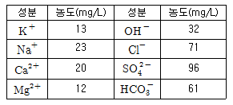
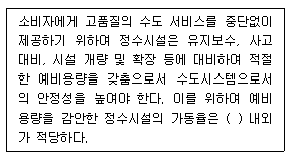
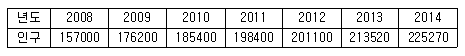
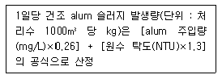
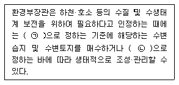
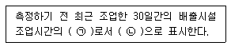

수질환경기사 (2017-05-07 기출문제)
1과목: 수질오염개론
1. 수질예측모형의 공간성에 따른 분류에 관한 설명으로 틀린 것은?
- 0차원 모형 : 식물성 플랑크톤의 계절적 변동사항에 주로 이용된다.
- 1차원 모형 : 하천이나 호수를 종방향 또는 횡방향의 연속교반 반응조로 가정한다.
- 2차원 모형 : 수질이 변동이 일방향성이 아닌 이방향성으로 분포하는 것으로 가정한다.
- 3차원 모형 : 대호수의 순환 패턴 분석에 이용된다.
(정답률: 75%)

2. 하구(estuary)의 혼합 형식 중 하상구배와 조차(潮差)가 적어서 염수와 담수의 2층의 밀도류가 발생되는 것은?
- 강 혼합형
- 약 혼합형
- 중 혼합형
- 완 혼합형
(정답률: 82%)
3. 20℃의 하천수에 있어서 바람 등에 의한 DO 공급량이 0.02mgO2/L·day이고, 이 강이 항상 DO 농도가 7mg/L 이상 유지되어야 한다면 이 강의 산소전달계수(hr-1)는? (단, α 와 β 는 무시, 20℃ 포화 DO = 9.17mg/L)
- 1.3×10-3
- 3.8×10-3
- 1.3×10-4
- 3.8×10-4
(정답률: 57%)
4. 지하수 오염의 특징으로 틀린 것은?
- 지하수의 오염경로는 단순하여 오염원에 의한 오염범위를 명확하게 구분하기가 용이하다.
- 지하수는 흐름을 눈으로 관찰할 수 없기 때문에 대부분의 경우 오염원의 흐름방향을 명확하게 확인하기 어렵다.
- 오염된 지하수층을 제거, 원상 복구하는 것은 매우 어려우며 많은 비용과 시간이 소요된다.
- 지하수는 대부분 지역에서 느린 속도로 이동하여 관측정이 오염원으로부터 원거리에 위치한 경우 오염원의 발견에 많은 시간이 소요될 수 있다.
(정답률: 83%)
5. 기상수(우수, 눈, 우박 등)에 관한 설명으로 틀린 것은?
- 기상수는 대기중에서 지상으로 낙하할 때는 상당한 불순물을 함유한 상태이다.
- 우수의 주성분은 육수의 주성분과 거의 동일하다.
- 해안 가까운 곳의 우수는 염분함량의 변화가 크다.
- 천수는 사실상 증류수로서 증류단계에서는 순수에 가까워 다른 자연수보다 깨끗하다.
(정답률: 81%)
6. 광합성에 대한 설명으로 틀린 것은?
- 호기성광합성(녹색식물의 광합성)은 진조류와 청녹조류를 위시하여 고등식물에서 발견된다.
- 녹색식물의 광합성은 탄산가스와 물로부터 산소와 포도당(또는 포도당 유도산물)을 생성하는 것이 특징이다.
- 세균활동에 의한 광합성은 탄산가스의 산화를 위하여 물 이외의 화합물질이 수소원자를 공여, 유리산소를 형성한다.
- 녹색식물의 광합성 시 광은 에너지를 그리고 물은 환원반응에 수소를 공급해 준다.
(정답률: 63%)
7. 호수 내의 성층현상에 관한 설명으로 가장 거리가 먼 것은?
- 여름성층의 연직 온도경사는 분자확산에 의한 DO구배와 같은 모양이다.
- 성층의 구분 중 약층(thermocline)은 수심에 따른 수온변화가 적다.
- 겨울성층은 표층수 냉각에 의한 성층이어서 역성층이라고도 한다.
- 전도현상은 가을과 봄에 일어나며 수괴(水槐)의 연직혼합이 왕성하다.
(정답률: 80%)
8. 우리나라 근해의 적조(red tide)현상의 발생조건에 대한 설명으로 가장 적절한 것은?
- 햇빛이 약하고 수온이 낮을 때 이상 균류의 이상 증식으로 발생한다.
- 수괴의 연직 안정도가 적어질 때 발생된다.
- 정체수역에서 많이 발생된다.
- 질소, 인 등의 영양분이 부족하여 적색이나 갈색의 적조 미생물이 이상적으로 증식한다.
(정답률: 71%)
9. 호소수의 전도현상(Turnover)이 호소수 수질환경에 미치는 영향을 설명한 내용 중 바르지 않은 것은?
- 수괴의 수직운동 촉진으로 호소 내 환경용량이 제한되어 물의 자정능력이 감소된다.
- 심층부까지 조류의 혼합이 촉진되어 상수원의 취수 심도에 영향을 끼치게 되므로 수도의 수질이 악화된다.
- 심층부의 영양염이 상승하게 됨에 따라 표층부에 규조류가 번성하게 되어 부영양화가 촉진된다.
- 조류의 다량 번식으로 물의 탁도가 증가되고 여과지가 폐색되는 등의 문제가 발생한다.
(정답률: 62%)
10. 담수와 해수에 대한 일반적인 설명으로 틀린 것은?
- 해수의 용존산소 포화도는 담수보다 작은데 주로 해수 중의 염류 때문이다.
- up welling은 담수가 해수의 표면으로 상승하는 현상이다.
- 해수의 주성분으로는 Cl-, Na+, SO42- 등이 가장 많다.
- 하구에서는 담수와 해수가 쐐기 형상으로 교차한다.
(정답률: 74%)
11. 운동기관이 없으며, 먹이를 흡수에 의해 섭식하는 원생동물 종류는?
- 포자충류
- 편모충류
- 섬모충류
- 육질충류
(정답률: 67%)
12. 분변성 오염을 나타낼 때 사용되는 지표미생물이 갖추어야 할 조건 중 옳지 않은 것은?
- 사람의 대변에만 많은 수로 존재해야 한다.
- 자연환경에는 없거나 적은 수로 존재해야 한다.
- 비병원성으로 간단한 방법에 의해 쉽고 빠르게 검출될 수 있어야 한다.
- 병원균보다 적은 수로 존재하고 자연환경에서 병원균보다 생존력이 약해야 한다.
(정답률: 73%)
13. 0.01M-KBr과 0.02M-ZnSO4 용액의 이온강도는? (단, 완전 해리기준)
- 0.08
- 0.09
- 0.12
- 0.14
(정답률: 61%)
14. 산소포화농도가 9mg/L인 하천에서 처음의 용존산소농도가 7mg/L라면 3일간 흐른 후 하천 하류지점에서의 용존산소 농도 (mg/L)는? (단, BODu = 10mg/L, 탈산소계수 = 0.1day-1, 재폭기계수 = 0.2day-1, 상용대수 기준)
- 4.5
- 5.0
- 5.5
- 6.0
(정답률: 51%)
15. 시료의 수질분석을 실시하여 다음 표와 같은 결과값을 얻었을 때 시료의 비탄산경도(mg/L as CaCO3)는? (단, K = 39, Na = 23, Ca = 40, Mg = 24, C = 12, O = 16, H = 1, Cl = 35.5, S = 32)(오류 신고가 접수된 문제입니다. 반드시 정답과 해설을 확인하시기 바랍니다.)

- 50
- 100
- 150
- 200
(정답률: 38%)
16. Glucose(C6H12O6) 500mg/L 용액을 호기성 처리 시 필요한 이론적인 인(P) 농도(mg/L)는? (단, BOD5 : N : P = 100 : 5 : 1, K1= 0.1day-1, 상용대수기준, 완전분해 기준, BODu = COD)
- 약 3.7
- 약 5.6
- 약 8.5
- 약 12.8
(정답률: 62%)
17. 하천수에서 난류확산에 의한 오염물질의 농도분포를 나타내는 난류확산방정식을 이용하기 위하여 일차적으로 고려해야 할 인자와 가장 관련이 적은 것은?
- 대상 오염물질의 침강속도(m/s)
- 대상 오염물질의 자기감쇠계수
- 유속(m/s)
- 하천수의 난류지수(Re. No)
(정답률: 63%)
18. 호수의 수질관리를 위하여 일반적으로 사용할 수 있는 예측모형으로 틀린 것은?
- WASP5 모델
- WQRRS 모델
- POM 모델
- Vollenweider 모델
(정답률: 76%)
19. 생물체 내에서 일어나는 에너지 대사에 적용되는 열역학법칙 내용과 거리가 먼 것은?
- 에너지의 총량은 일정하다.
- 자연적인 반응은 질서도가 커지는 방향으로 진행한다.
- 엔트로피는 끊임없이 증가하고 있다.
- 절대온도 0°K(-273.16℃)에서는 분자운동이 없으며 엔트로피는 0이다.
(정답률: 71%)
20. 생 하수 내에 주로 존재하는 질소의 형태는?
- 암모니아와 N2
- 유기성질소와 암모니아성질소
- N2와 NO
- NO2- 와 NO3-
(정답률: 75%)
2과목: 상하수도계획
21. Cavitation 발생을 방지하기 위한 대책으로 틀린 것은?
- 펌프의 설치위치를 가능한 한 낮추어 가용유효흡입수두를 크게 한다.
- 펌프의 회전속도를 낮게 선정하여 필요유효흡입수두를 크게 한다.
- 흡입측 밸브를 완전히 개방하고 펌프를 운전한다.
- 흡입관에 손실을 가능한 한 작게 하여 가용유효흡입수두를 크게한다.
(정답률: 72%)
22. 양수량(Q) 14m3/min, 전양정(H) 10m, 회전수(N) 1100rpm인 펌프의 비교회전도(Ns)는?
- 412
- 732
- 1302
- 1416
(정답률: 71%)
23. 정수시설인 급속여과지 시설기준에 관한 설명으로 옳지 않은 것은?
- 여과면적은 계획정수량을 여과속도로 나누어 구한다.
- 1지의 여과면적은 200m2 이상으로 한다.
- 여과모래의 유효경이 0.45~0.7mm의 범위인 경우에는 모래층의 두께는 60~70cm를 표준으로 한다.
- 여과속도는 120~150m/d를 표준으로 한다.
(정답률: 75%)
24. 도수거에 대한 설명으로 맞는 것은?
- 도수거의 개수로 경사는 일반적으로 1/100~1/300의 범위에서 선정된다.
- 개거나 암거인 경우에는 대개 30~50m 간격으로 시공조인트를 겸한 신축조인트를 설치한다.
- 도수거에서 평균유속의 최대한도는 2.0m/s로 한다.
- 도수거에서 최소유속은 0.5m/s로 한다.
(정답률: 54%)
25. 급수시설의 설계유량에 대한 설명으로 틀린 것은?
- 수원지, 저수지, 유역면적 결정에는 1일평균급수량이 기준
- 배수지, 송수관구경 결정에는 1일최대급수량을 기준
- 배수본관의 구경결정에는 시간최대급수량을 기준
- 정수장의 설계유량은 1일평균급수량을 기준
(정답률: 49%)
26. 정수시설인 막여과시설에서 막모듈의 파울링에 해당되는 내용은?
- 막모듈의 공급유로 또는 여과수 유로가 고형물로 폐색되어 흐르지 않는 상태
- 미생물과 막 재질의 자화 또는 분비물의 작용에 의한 변화
- 건조되거나 수축으로 인한 막 구조의 비가역적인 변화
- 원수 중의 고형물이나 진동에 의한 막 면의 상처나 마모, 파단
(정답률: 70%)
27. 지하수 취수 시 적용되는 양수량 중에서 적정양수량의 정의로 옳은 것은?
- 최대양수량의 80% 이하의 양수량
- 한계양수량의 80% 이하의 양수량
- 최대양수량의 70% 이하의 양수량
- 한계양수량의 70% 이하의 양수량
(정답률: 71%)
28. 상수도관 부식의 종류 중 매크로셀 부식으로 분류되지 않는 것은? (단, 자연부식 기준)
- 콘크리트·토양
- 이종금속
- 산소농담(통기차)
- 박테리아
(정답률: 65%)
29. 계획취수량이 10m3/sec, 유입수심이 5m, 유입속도가 0.4m/sec인 지역에 취수구를 설치하고자 할 때 취수구의 폭(m)은? (단, 취수보 설계 기준)
- 0.5
- 1.25
- 2.5
- 5.0
(정답률: 63%)
30. 펌프효율 η = 80%, 전양정 H = 16m 인 조건하에서 양수량 Q= 12L/sec로 펌프를 회전시킨다면 이 때 필요한 축동력(kW)은? (단, 전동기는 직결, 물의 밀도 r = 1000kg/m3)
- 1.28
- 1.73
- 2.35
- 2.88
(정답률: 49%)
31. 상수도시설의 계획 기준으로 옳지 않은 것은?
- 계획취수량은 계획1일최대급수량을 기준으로 한다.
- 계획배수량은 원칙적으로 해당 배수구역의 계획1일최대급수량으로 한다.
- 도수시설의 계획도수량은 계획취수량을 기준으로 한다.
- 계획정수량은 계획1일최대급수량을 기준으로 한다.
(정답률: 44%)
32. 상수관로의 길이 800m, 내경 200mm에서 유속 2m/sec로 흐를때 관마찰 손실수두(m)는? (단, Darcy-Weisbach 공식을 이용, 마찰손실계수 = 0.02)
- 약 16.3
- 약 18.4
- 약 20.7
- 약 22.6
(정답률: 48%)
33. 하수관거 설계 시 오수관거의 최소관경에 관한 기준은?
- 150 mm를 표준으로 한다.
- 200 mm를 표준으로 한다.
- 250 mm를 표준으로 한다.
- 300 mm를 표준으로 한다.
(정답률: 72%)
34. 정수시설의 시설능력에 관한 내용으로 ( )에 옳은 내용은?

- 55%
- 65%
- 75%
- 85%
(정답률: 70%)
35. 취수시설에서 침사지에 관한 설명으로 틀린 것은?
- 지의 위치는 가능한 한 취수구에 근접하여 제내지에 설치한다.
- 지의 상단높이는 고수위보다 0.3~0.6m의 여유고를 둔다.
- 지의 고수위는 계획취수량이 유입될 수 있도록 취수구의 계획최저수위 이하로 정한다.
- 지의 길이는 폭의 3~8배, 지내 평균 유속은 2~7cm/sec를 표준으로 한다.
(정답률: 59%)
36. 도시의 상수도 보급을 위하여 최근 7년간의 인구를 이용하여 급수인구를 추정하려고 한다. 최근 7년간 도시의 인구가 다음과 같은 경향을 나타낼 때 2018년도의 인구를 등차급수법으로 추정한 것은?

- 약 265324명
- 약 270786명
- 약 277750명
- 약 294416명
(정답률: 48%)
37. 경사가 2‰인 하수관거의 길이가 6000m일 때 상류관과 하류관의 고저차(m)는? (단, 기타 조건은 고려하지 않음)
- 3
- 6
- 9
- 12
(정답률: 69%)
38. 하수슬러지 소각을 위한 소각로 중에서 건설비가 가장 큰 것은?
- 다단소각로
- 유동층소각로
- 기류건조소각로
- 회전소각로
(정답률: 51%)
39. 상수도 기본계획수립 시 기본사항에 대한 결정 중 계획(목표)년도에 관한 내용으로 옳은 것은?
- 기본계획의 대상이 되는 기간으로 계획수립시부터 10~15년간을 표준으로 한다.
- 기본계획의 대상이 되는 기간으로 계획수립시부터 15~20년간을 표준으로 한다.
- 기본계획의 대상이 되는 기간으로 계획수립시부터 20~25년간을 표준으로 한다.
- 기본계획의 대상이 되는 기간으로 계획수립시부터 25~30년간을 표준으로 한다.
(정답률: 68%)
40. 최근 정수장에서 응집제로서 많이 사용되고 있는 폴리염화알루미늄(PACℓ)에 대한 설명으로 옳은 것은?
- 일반적으로 황산알루미늄보다 적정주입 pH의 범위가 넓으며 알칼리도의 감소가 적다.
- 일반적으로 황산알루미늄보다 적정주입 pH의 범위가 좁으며 알칼리도의 감소가 적다.
- 일반적으로 황산알루미늄보다 적정주입 pH의 범위가 좁으며 알칼리도의 감소가 크다.
- 일반적으로 황산알루미늄보다 적정주입 pH의 범위가 넓으며 알칼리도의 감소가 크다.
(정답률: 62%)
3과목: 수질오염방지기술
41. NaOH를 1% 함유하고 있는 60m3의 폐수를 HCl 36% 수용액으로 중화하려할 때 소요되는 HCl 수용액의 양(kg)은?
- 1102.46
- 1303.57
- 1520.83
- 1601.57
(정답률: 39%)
42. 혐기성 소화법과 비교한 호기성 소화법의 장·단점으로 옳지 않은 것은?
- 운전이 용이하다.
- 소화슬러지 탈수가 용이하다.
- 가치 있는 부산물이 생성되지 않는다.
- 저온시의 효율이 저하된다.
(정답률: 54%)
43. 상수처리를 위한 사각 침전조에 유입되는 유량은 30000m3/d이고 표면부하율은 24m3/m2·d이며 체류시간은 6시간이다. 침전조의 길이 와 폭의 비는 2 : 1이라면 조의 크기는?
- 폭 : 20m, 길이 : 40m, 깊이 : 6m
- 폭 : 20m, 길이 : 40m, 깊이 : 4m
- 폭 : 25m, 길이 : 50m, 깊이 : 6m
- 폭 : 25m, 길이 : 50m, 깊이 : 4m
(정답률: 59%)
44. 분뇨의 생물학적 처리공법으로서 호기성 미생물이 아닌 혐기성 미생물을 이용한 혐기성처리공법을 주로 사용하는 근본적인 이유는?
- 분뇨에는 혐기성미생물이 살고 있기 때문에
- 분뇨에 포함된 오염물질은 혐기성미생물만이 분해할 수 있기 때문에
- 분뇨의 유기물 농도가 너무 높아 포기에 너무 많은 비용이 들기 때문에
- 혐기성처리공법으로 발생되는 메탄가스가 공법에 필수적이기 때문에
(정답률: 68%)
45. 하수고도처리를 위한 A/O공정의 특징으로 옳은 것은? (단, 일반적인 활성슬러지공법과 비교 기준)
- 혐기조에서 인의 과잉흡수가 일어난다.
- 폭기조 내에서 탈질이 잘 이루어진다.
- 잉여슬러지 내의 인 농도가 높다.
- 표준 활성슬러지공법의 반응조 전반 10% 미만을 혐기반응조로 하는 것이 표준이다.
(정답률: 60%)
46. A2/O 공법에 대한 설명으로 틀린 것은?
- 혐기조 - 무산소조 - 호기조 - 침전조 순으로 구성된다.
- A2/O 공정은 내부재순환이 있다.
- 미생물에 의한 인의 섭취는 주로 혐기조에서 일어난다.
- 무산소조에서는 질산성질소가 질소가스로 전환된다.
(정답률: 72%)
47. 생물학적 원리를 이용하여 하수 내 질소를 제거(3차 처리)하기 위한 공정으로 가장 거리가 먼 것은?
- SBR 공정
- UCT 공정
- A/O 공정
- Bardenpho 공정
(정답률: 62%)
48. 회전원판법의 특징에 해당되지 않은 것은?
- 운전관리상 조작이 간단하고 소비전력량은 소규모 처리시설에서는 표준활성슬러지법에 비하여 적다.
- 질산화가 일어나기 쉬우며 이로 인하여 처리수의 BOD가 낮아진다.
- 활성슬러지법에 비해 이차침전지에서 미세한 SS가 유출되기 쉽고 처리수의 투명도가 나쁘다.
- 살수여상과 같이 파리는 발생하지 않으나 하루살이가 발생하는 수가 있다.
(정답률: 52%)
49. 폭기조 내 MLSS 농도가 4000mg/L이고 슬러지 반송률이 55%인 경우 이 활성슬러지의 SVI는? (단, 유입수 SS 고려하지 않음)
- 약 69
- 약 79
- 약 89
- 약 99
(정답률: 47%)
50. 고도 수처리에 이용되는 정밀여과 분리막 방법에 관한 설명으로 가장 거리가 먼 것은?
- 분리형태 : 용해, 확산
- 구동력 : 정수압차(0.1~1Bar)
- 막형태 : 대칭형 다공성막(Pore size 0.1~10m)
- 적용분야 : 전자공업의 초순수 제조, 무균수제조
(정답률: 58%)
51. 4L의 물은 0.3atm의 분압에서 CO2를 포함하는 가스혼합물과 평형상태에 있다. H2CO3의 용해도에 대한 Henry 상수는 2.0g/L·atm이다. 물에서 용존된 CO2는 몇 g이며 물의 pH는? (단, H2CO3의 일차 용해도적 K1 = 4.3×10-7, 이차해리는 무시)
- 1.20g, pH = 2.56
- 1.45g, pH = 4.12
- 2.23g, pH = 2.56
- 2.41g, pH = 4.12
(정답률: 36%)
52. 역삼투장치로 하루에 1710m3 의 3차 처리된 유출수를 탈염시킬때 요구되는 막면적(m2)은? (단, 유입수와 유출수 사이의 압력차 =2400kPa, 25℃에서 물질전달계수 = 0.2068L/(day-m2)(kPa), 최저 운전 온도 = 10℃, A10℃ = 1.58A25℃, 유입수와 유출수의 삼투압 차= 310kPa)
- 약 5351
- 약 6251
- 약 7351
- 약 8121
(정답률: 57%)
53. 연속회분식(SBR)의 운전단계에 관한 설명으로 틀린 것은?
- 주입 : 주입단계 운전의 목적은 기질(원폐수 또는 1차 유출수)을 반응조에 주입하는 것이다.
- 주입 : 주입단계는 총 cycle 시간의 약 25% 정도이다.
- 반응 : 반응단계는 총 cycle 시간의 약 65% 정도이다.
- 침전 : 연속흐름식 공정에 비하여 일반적으로 더 효율적이다.
(정답률: 62%)
54. 수량 36000m3/day의 하수를 폭 15m, 길이 30m, 깊이 2.5m의 침전지에서 표면적 부하 40m2/m2·day의 조건으로 처리하기 위한 침전지 수는? (단, 병렬기준)
- 2
- 3
- 4
- 5
(정답률: 60%)
55. 생물학적 방법과 화학적 방법을 함께 이용한 고도처리 방법은?
- 수정 Bardenpho 공정
- Phostrip 공정
- SBR 공정
- UCT 공정
(정답률: 46%)
56. 질산화 반응에 관한 설명으로 옳은 것은?
- 질산균의 에너지원은 유기물이다.
- 질산균의 증식속도는 활성슬러지 내 미생물보다 빠르다.
- 질산균의 질산화 반응 시 알칼리도가 생성된다.
- 질산균의 질산화 반응 시 용존산소는 2mg/L 이상이어야 한다.
(정답률: 44%)
57. Michaelis-Menten 공식에서 반응속도(r)가 Rmax의 80%일 때의 기질농도와 Rmax의 20%일 때의 기질농도의 비([S]80/[S]20)는?
- 8
- 16
- 24
- 41
(정답률: 55%)
58. 고농도의 유기물질(BOD)이 오염이 적은 수계에 배출될 때 나타나는 현상으로 가장 거리가 먼 것은?
- pH의 감소
- DO의 감소
- 박테리아의 증가
- 조류의 증가
(정답률: 50%)
59. 슬러지 건조상 면적을 결정하기 위한 건조고형성분 중량치(건조 alum 슬러지)는 73kg/m2, 평균 alum 주입량 10mg/L, 원수의 평균 탁도가 12 NTU 이라면 30일간의 슬러지를 저류하기 위한 정사각형 슬러지 건조상의 한 변의 길이(m)는? (단, 일일 평균 처리수 유량 75700m3)

- 약 12
- 약 16
- 약 20
- 약 24
(정답률: 32%)
60. 직경이 1.0×10-2cm인 원형 입자의 침강속도(m/hr)는? (단, Stokes 공식 사용, 물의 밀도 = 1.0g/cm3, 입자의 밀도 =2.1g/cm3, 물의 점성계수 = 1.0087×10-2g/cm·sec)
- 21.4
- 24.4
- 28.4
- 32.4
(정답률: 47%)
4과목: 수질오염공정시험기준
61. 수질오염물질을 측정함에 있어 측정의 정확성과 통일성을 유지하기 위한 제반사항에 관한 설명으로 틀린 것은?
- 시험에 사용하는 시약은 따로 규정이 없는 한 1급 이상 또는 이와 동등한 규격의 시약을 사용한다.
- “항량으로 될 때까지 건조한다”라는 의미는 같은 조건에서 1시간 더 건조할 때 전후 무게의 차가 g당 0.3mg 이하일 때를 말한다.
- 기체 중의 농도는 표준상태(0℃, 1기압)로 환산 표시 한다.
- “정확히 취하여”라 하는 것은 규정한 양의 시료를 부피피펫으로 0.1mL까지 취하는 것을 말한다.
(정답률: 65%)
62. 원자흡수분광광도법에서 사용하고 있는 용어에 관한 설명으로 틀린 것은?
- 공명선은 원자가 외부로부터 빛을 흡수했다가 다시 먼저 상태로 돌아갈 때 방사하는 스펙트럼선이다.
- 역화는 불꽃의 연소속도가 작고 혼합기체의 분출속도가 클 때 연소현상이 내부로 옮겨지는 것이다.
- 소연료불꽃은 가연성가스와 조연성가스의 비를 적제한 불꽃 즉, 가연성가스/조연성가스이 값을 적게 한 불꽃이다.
- 멀티패스는 불꽃중에서 광로를 길게 하고 흡수를 증대시키기 위하여 반사를 이용하여 불꽃 중에 빛을 여러번 투과시키는 것이다.
(정답률: 53%)
63. 배출허용기준 적합여부 판정을 위한 시료채취시 복수 시료채취방법 적용을 제외할 수 있는 경우가 아닌 것은?
- 환경오염사고, 취약시간대의 환경오염감시 등 신속한 대응이 필요한 경우
- 부득이 복수시료채취 방법으로 할 수 없을 경우
- 유량이 일정하며 연속적으로 발생되는 폐수가 방류되는 경우
- 사업장내에서 발생하는 폐수를 회분식 등 간헐적으로 처리하여 방류하는 경우
(정답률: 51%)
64. 수질오염공정시험기준에서 시료의 최대보존기간이 다른 측정항목은?
- 페놀류
- 인산염인
- 화학적산소요구량
- 황산이온
(정답률: 49%)
65. 수질오염공정시험기준에서 시료보존 방법이 지정되어 있지 않은 측정항목은?
- 용존산소(윙클러법)
- 불소
- 색도
- 부유물질
(정답률: 51%)
66. 수산화나트륨 1g을 증류수에 용해시켜 400mL로 하였을 때 이 용액의 pH는?
- 13.8
- 12.8
- 11.8
- 10.8
(정답률: 55%)
67. NaOH 0.01M은 몇 mg/L 인가?
- 40
- 400
- 4000
- 40000
(정답률: 63%)
68. 산소전달율을 측정하기 위하여 실험 시작 초기에 물속에 존재하는 DO를 제거하기 위하여 첨가하는 시약은?
- AgNO3
- Na2SO3
- CaCO3
- NaN3
(정답률: 59%)
69. 다음 중 시료의 보존방법이 다른 측정항목은?
- 화학적산소요구량
- 질산성질소
- 암모니아성질소
- 총질소
(정답률: 52%)
70. 기체크로마토그래피법에 관한 설명으로 틀린 것은?
- 가스시료도입부는 가스계량관(통상 0.5~5mL)과 유로변환기구로 구성된다.
- 검출기오븐은 검출기 한 개를 수용하며, 분리관 오븐 온도보다 높게 유지되어서는 안된다.
- 열전도도형 검출기에서는 순도 99.9% 이상의 수소나 헬륨을 사용한다.
- 수소염이온화검출기에서는 순도 99.9% 이상의 질소 또는 헬륨을 사용한다.
(정답률: 44%)
71. 수질오염공정시험기준에서 금속류인 바륨의 시험방법과 가장 거리가 먼 것은?
- 원자흡수분광광도법
- 자외선/가시선 분광법
- 유도결합플라스마 원자발광분광법
- 유도결합플라스마 질량분석법
(정답률: 46%)
72. 생물화학적 산소요구량(BOD)을 측정할 때 가장 신뢰성이 높은 결과를 갖기 위해서는 용존산소 감소율이 5일 후 어느 정도이어야 하는가?
- 10~20
- 20~40
- 40~70
- 70~90
(정답률: 48%)
73. 유도결합 플라스마 발광광도 분석장치를 바르게 배열한 것은?
- 시료주입부 - 고주파전원부 - 광원부 - 분광부 - 연산처리부 및 기록부
- 시료주입부 - 고주파전원부 - 분광부 - 광원부 - 연산처리부 및 기록부
- 시료주입부 - 광원부 - 분광부 - 고주파전원부 - 연산처리부 및 기록부
- 시료주입부 - 광원부 - 고주파전원부 - 분광부 - 연산처리부 및 기록부
(정답률: 50%)
74. 노말헥산 추출물질의 정량한계(mg/L)는?
- 0.1
- 0.5
- 1.0
- 5.0
(정답률: 57%)
75. 공장폐수 및 하수의 관내 유량측정을 위한 측정장치 중 관내의 흐름이 완전히 발달하여 와류에 영향을 받지 않고 실질적으로 직선적인 흐름을 유지하기 위해 난류 발생의 원인이 되는 관로상의 점 으로부터 충분히 하류지점에 설치하여야 하는 것은?
- 오리피스
- 벤튜리미터
- 피토우관
- 자기식 유량측정기
(정답률: 52%)
76. 전기전도도 측정계에 관한 내용으로 옳지 않는 것은?(오류 신고가 접수된 문제입니다. 반드시 정답과 해설을 확인하시기 바랍니다.)
- 전기전도도 셀은 항상 수중에 잠긴 상태에서 보존하여야 하며 정기적으로 점검한 후 사용한다.
- 전도도 셀은 그 형태, 위치, 전극의 크기에 따라 각각 자체의 셀상수를 가지고 있다.
- 검출부는 한 쌍의 고정된 전극(보통 백금 전극 표면에 백금흑도금을 한 것)으로 된 전도도셀 등을 사용한다.
- 지시부는 직류 휘트스톤브리지 회로나 자체보상회로로 구성된 것을 사용한다.
(정답률: 48%)
77. 수질오염공정시험기준의 원자흡수분광광도법에 의한 수은 측정시 수은표준원액 제조를 위한 표준시약은?
- 염화수은
- 이산화수은
- 황화수은
- 황화제이수은
(정답률: 50%)
78. 흡광광도 분석 장치의 구성 순서로 옳은 것은?
- 광원부 - 파장선택부 - 시료부 - 측광부
- 시료부 - 광원부 - 파장선택부 - 측광부
- 시료부 - 파장선택부 - 광원부 - 측광부
- 광원부 - 시료부 - 파장선택부 - 측광부
(정답률: 54%)
79. COD 값을 증가시키는 원인이 되지 않는 이온은?
- 염소 이온
- 제1철 이온
- 아질산 이온
- 크롬산 이온
(정답률: 34%)
80. 자외선/가시선 분광법(o-페난트로린법)을 이용한 철분석의 측정 원리에 관한 내용으로 틀린 것은?
- 철 이온을 암모니아 알칼리성으로 하여 수산화제이철로 침전분리한다.
- 침전을 염산에 녹인 후 염산하이드록실아민으로 제일철로 환원한다.
- o-페난트로린을 넣어 약알칼리성에서 나타나는 청색의 철착염의 흡광도를 측정한다.
- 지표수, 지하수, 폐수 등에 적용할 수 있으며 정량한계는 0.08mg/L이다.
(정답률: 42%)
5과목: 수질환경관계법규
81. 공공폐수처리시설의 방류수 수질기준 중 잘못된 것은? (단, I지역, 2013.1.1. 이후)
- BOD 10mg/L 이내
- COD 20mg/L 이내
- SS 20mg/L 이내
- T-N 20mg/L 이내
(정답률: 31%)
82. 일 8000톤의 폐수를 배출하고 있는 사업장으로 처음 위반한 경우 위반횟수별 부과계수는?
- 1.5
- 1.6
- 1.7
- 1.8
(정답률: 33%)
83. 환경부장관이 수질 및 수생태계를 보전할 필요가 있다고 지정, 고시하고 수질 및 수생태계를 정기적으로 조사, 측정하여야 하는 호소의 기준으로 틀린 것은?
- 1일 30만톤 이상의 원수를 취수하는 호소
- 만수위일 때 면적이 10만 제곱미터 이상인 호소
- 수질오염이 심하여 특별한 관리가 필요하다고 인정되는 호소
- 동식물의 서식시·도래지이거나 생물다양성이 풍부하여 특별히 보전할 필요가 있다고 인정되는 호소
(정답률: 62%)
84. 낚시제한구역에서의 제한사항이 아닌 것은?
- 1명당 3대의 낚시대를 사용하는 행위
- 1개의 낚시대에 5개 이상의 낚시바늘을 떡밥과 뭉쳐서 미끼로 던지는 행위
- 낚시바늘에 끼워서 사용하지 아니하고 물고기를 유인하기 위하여 떡밥·어분 등을 던지는 행위
- 어선을 이용한 낚시행위 등 「낚시 관리 및 육성법」에 따른 낚시 어선업을 영위하는 행위(「내수면어업법 시행령」에 따른 외줄낚시는 제외한다)
(정답률: 61%)
85. 환경기준 중 수질 및 수생태계에서 호소의 생활환경 기준 항목에 해당되지 않는 것은? (문제 오류로 실제 시험에서는 2, 4번이 정답처리 되었습니다. 여기서는 2번을 누르면 정답 처리 됩니다.)
- DO
- COD
- T-N
- BOD
(정답률: 60%)
86. 위임업무 보고사항 중 보고 횟수가 연 1회에 해당되는 것은?
- 기타 수질오염원 현황
- 폐수위탁·사업장내 처리현황 및 처리실적
- 과징금 징수 실적 및 체납처분 현황
- 폐수처리업에 대한 등록·지도단속실적 및 처리실적 현황
(정답률: 51%)
87. 7년 이하의 징역 또는 7천만원 이하의 벌금에 처하는 자에 해당 되지 않는 것은?
- 허가 또는 변경허가를 받지 아니하거나 거짓으로 허가 또는 변경 허가를 받아 배출시설을 설치 또는 변경하거나 그 배출시설을 이용하여 조업한 자
- 방지시설에 유입되는 수질오염물질을 최종방류구를 거치지 아니하고 배출하거나 최종방류구를 거치지 아니하고 배출할 수 있는 시설을 설치하는 행위를 한 자
- 폐수무방류배출시설에서 배출되는 폐수를 사업장 밖으로 반출하거나 공공수역으로 배출하거나 배출할 수 있는 시설을 설치하는 행위를 한 자
- 배출시설의 설치를 제한하는 지역에서 제한되는 배출시설을 설치하거나 그 시설을 이용하여 조업한 자
(정답률: 30%)
88. 수변생태구역의 매수·조성 등에 관한 내용으로 ( )에 옳은 것은?

- ㉠ 환경부령, ㉡ 대통령령
- ㉠ 대통령령, ㉡ 환경부령
- ㉠ 환경부령, ㉡ 국무총리령
- ㉠ 국무총리령, ㉡ 환경부령
(정답률: 64%)
89. 수질오염경보의 종류별·경보단계별 조치사항 중 상수원 구간에서 조류경보의 [관심] 단계일 때 유역, 지방 환경청장의 조치사항인 것은?
- 관심 경보 발령
- 대중매체를 통한 홍보
- 조류 제거 조치 실시
- 주변 오염원 단속 강화
(정답률: 51%)
90. 다음 중 특정수질유해물질이 아닌 것은?
- 1,1-디클로로에틸렌
- 브로모포름
- 아크릴로니트릴
- 2,4-다이옥산
(정답률: 49%)
91. 배출시설 변경신고에 따른 가동시작 신고의 대상으로 틀린 것은?
- 폐수배출량이 신고 당시보다 100분의 50 이상 증가하는 경우
- 배출시설에 설치된 방지시설의 폐수처리방법을 변경하는 경우
- 배출시설에서 배출허용기준 보다 적게 발생한 오염물질로 인해 개선이 필요한 경우
- 방지시설 설치면제기준에 따라 방지시설을 설치하지 아니한 배출 시설에 방지시설을 새로 설치하는 경우
(정답률: 54%)
92. 배출시설에 대한 일일기준초과배출량 산정에 적용되는 일일유량은 (측정유량×일일조업시간)이다. 일일유량을 구하기 위한 일일조업 시간에 대한 설명으로 ( )에 맞는 것은?

- ㉠ 평균치, ㉡ 분(min)
- ㉠ 평균치, ㉡ 시간(HR)
- ㉠ 최대치, ㉡ 분(min)
- ㉠ 최대치, ㉡ 시간(HR)
(정답률: 55%)
93. 수질오염물질의 배출허용기준의 지역구분에 해당되지 않는 것은?
- 나지역
- 다지역
- 청정지역
- 특례지역
(정답률: 60%)
94. 환경기술인에 대한 교육기관으로 옳은 것은?
- 국립환경인력개발원
- 국립환경과학원
- 한국환경공단
- 환경보전협회
(정답률: 49%)
95. 비점오염저감시설의 설치기준에서 자연형 시설중 인공습지의 설치기준으로 틀린 것은?
- 습지에는 물이 연중 항상 있을 수 있도록 유량공급대책을 마련하여야 한다.
- 인공습지의 유입구에서 유출구까지의 유로는 최대한 길게 하고, 길이 대 폭의 비율은 2 : 1이상으로 한다.
- 유입부에서 유출부까지의 경사는 1.0~5.0%를 초과하지 아니하도록 한다.
- 생물의 서식 공간을 창출하기 위하여 5종부터 7종까지의 다양한 식물을 심어 생물다양성을 증가시킨다.
(정답률: 50%)
96. 간이공공하수처리시설에서 배출하는 하수찌꺼기 성분 검사주기는?
- 월 1회 이상
- 분기 1회 이상
- 반기 1회 이상
- 연 1회 이상
(정답률: 37%)
97. 수질 및 수생태계 보전에 관한 법령상 호소 및 해당 지역에 관한 설명으로 틀린 것은?
- 제방(사방사업법의 사방시설 포함)을 쌓아 하천에 흐르는 물을 가두어 놓은 곳
- 하천에 흐르는 물이 자연적으로 가두어진 곳
- 화산활동 등으로 인하여 함몰된 지역에 물이 가두어진 곳
- 댐·보를 쌓아 하천에 흐르는 물을 가두어 놓은 곳
(정답률: 56%)
98. 수질 및 수생태계 환경기준 중 해역의 생활환경기준 항목이 아닌 것은?
- 음이온계면활성제
- 용매 추출유분
- 총대장균군
- 수소이온농도
(정답률: 41%)
99. 수질오염방지시설 중 물리적 처리시설에 해당되는 것은?
- 폭기시설
- 산화시설(산화조 또는 산화지)
- 이온교환시설
- 부상시설
(정답률: 52%)
100. 환경부장관이 수립하는 대권역 수질 및 수생태계 보전을 위한 기본계획에 포함되어야 하는 사항으로 틀린 것은?(관련 규정 개정전 문제로 여기서는 기존 정답인 1번을 누르면 정답 처리됩니다. 자세한 내용은 해설을 참고하세요.)
- 수질오염관리 기본 및 시행계획
- 점오염원, 비점오염원 및 기타 수질오염원에 의한 수질오염물질의 양
- 점오염원, 비점오염원 및 기타 수질오염원의 분포현황
- 수질 및 수생태계 변화 추이 및 목표기준
(정답률: 53%)